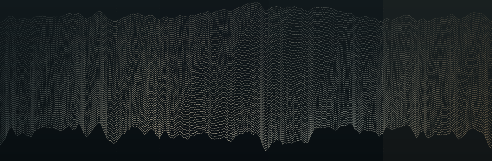

Das vollständige Werk
Ein durchgehendes Stereo-MP3
320 kbit/s · ca. 176 MB
Kantate für vier Solostimmen, Chöre und Orchester. Aufgenommen im Großen Saal des Gewandhauses zu Leipzig unter der musikalischen Leitung von Gregor Meyer.

FIG. 01 Klangrelief. Ein grafisches Porträt des Mitschnitts, aus gemessener Dynamik, Klangfarbe und Impulsstruktur entwickelt.
Auf die Grafik klicken, um eine Stelle anzuwählen. Auch mit der Tastatur bedienbar.
AKTUELLER SATZ
Text: Andreas Gryphius
Die Aufnahme wird geladen …
Ein durchgehendes Stereo-MP3
320 kbit/s · ca. 176 MB
Hochauflösende WAV-Dateien
96 kHz / 24 Bit · ZIP-Archiv · ca. 2,39 GB
Die Dateien werden über Google Drive bereitgestellt. Bei großen Downloads kann Google eine Bestätigung verlangen.
Weitere Informationen: Konzertankündigung des Gewandhauses